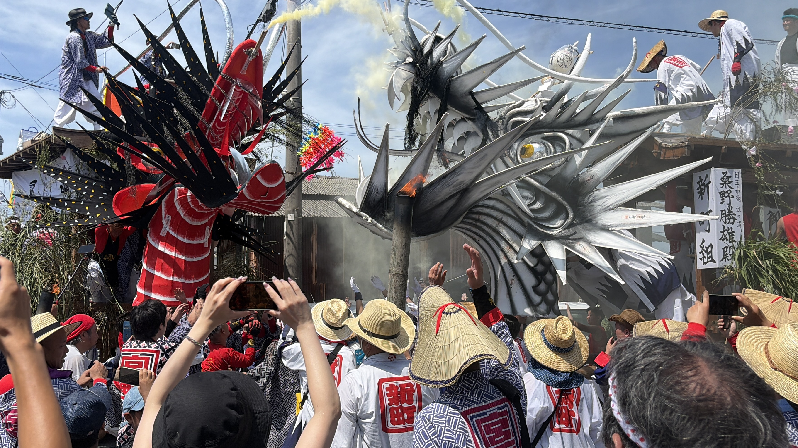
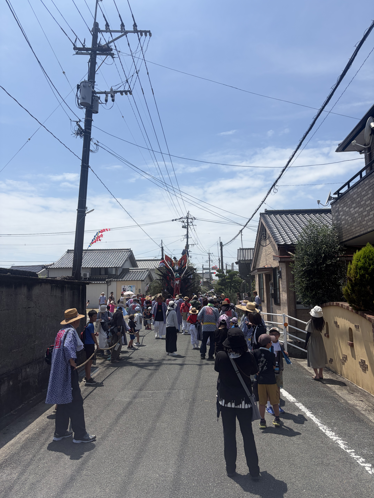
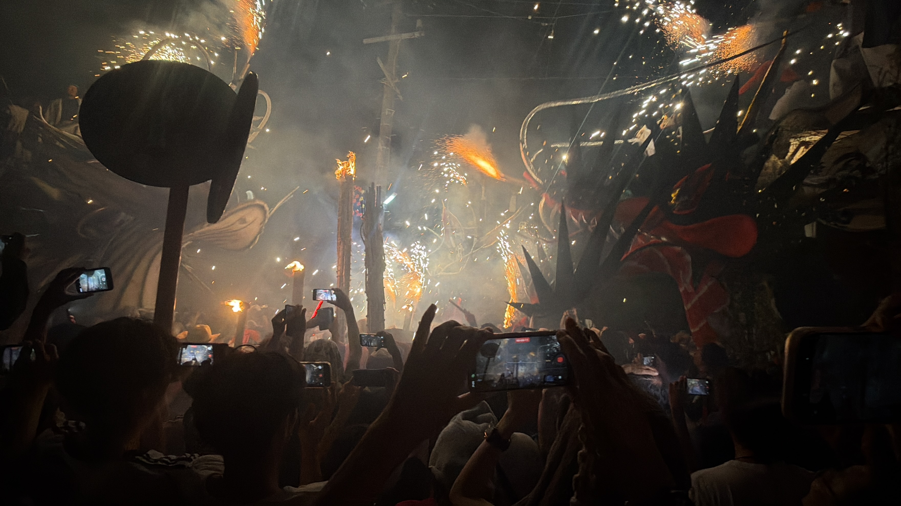

見どころ
江の浦町祇園祭の魅力をご紹介します
01
大蛇山・山車
江の浦町祇園祭を代表する大蛇山や踊り山は、 迫力のある姿で町を練り歩きます。 見る人を圧倒するその迫力は、 祭りの最大の見どころです。


02
祭りのにぎわい
地域の人々が集まり、力を合わせて祭りを 盛り上げる姿は、江の浦町祇園祭ならではの 魅力です。町全体が一体となり 熱気に包まれます。
03
夜の祭り
夜になると、提灯の灯りや花火が祭りを さらに華やかに彩ります。 昼とは違う幻想的な雰囲気の中で、 江の浦町祇園祭を楽しむことができます。
